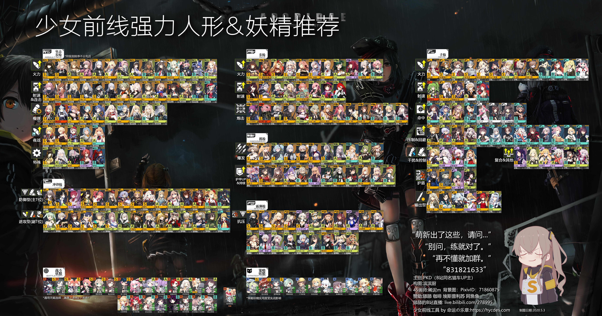
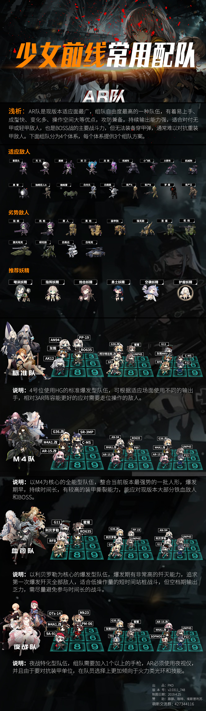
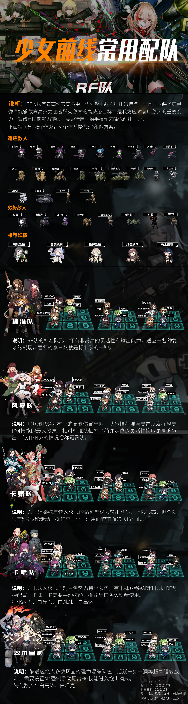
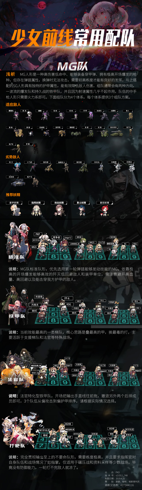
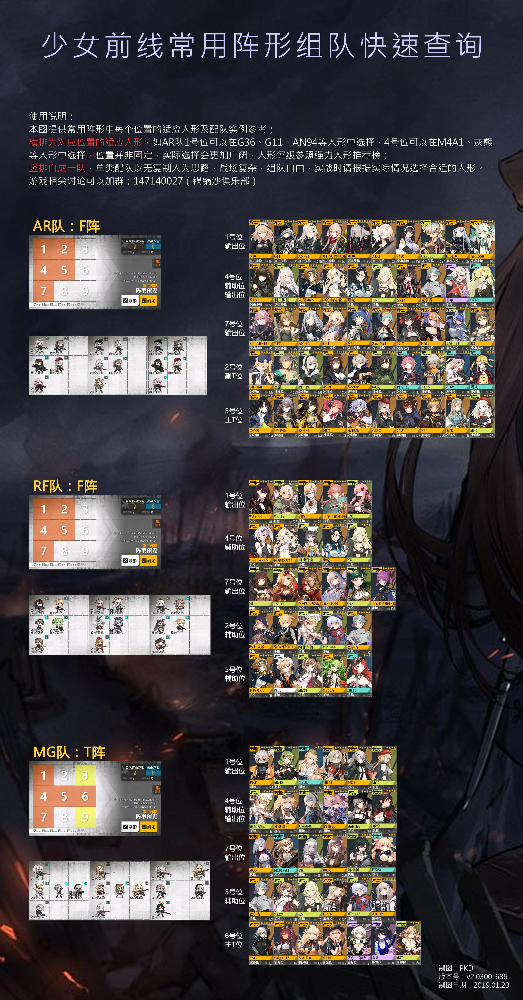

1. 少女前线强力人形推荐(2020.5.3更新)

感谢滨滨厨的无私制图和各位讨论纠正的大佬。
图片说明：
1.本图意在方便选择困难的萌新和老咸鱼参考练枪，如果你有不同意见，请务必坚持己见，本贴不作争论。
2.评级按各类别从左到右按综合实力从高(S级)到低(C级)排列，同级排列不分先后，使用时请结合实际情况选择。
3.想练复制人的话自然也是推荐练评级较高的人形。
4.欢迎转载。
外部下载地址：
链接：[https://pan.baidu.com/s/1iF6DzQJGG97V9ETjTGbxrw]
提取码：9ac7
2. 少女前线常用配队&常用阵形组队快速查询(2019.4.26更新)




说明：
1.图片使用说明均在图中详细写出，请仔细阅读说明。
2.常用配队图和阵形查询图互相配合使用，方便自助组队。
3.本系列图片意在方便对游戏不熟悉的萌新和老咸鱼参考组队，如果你有不同意见，请务必坚持己见，本贴不作争论。
4.欢迎转载。
外部下载地址：
[https://pan.baidu.com/s/1n1hFKwv4CkH_4G1LSas4RQ]
提取码：c3p8